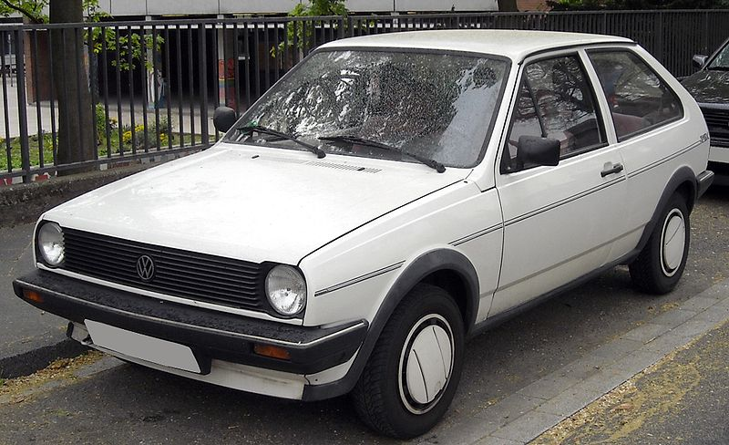
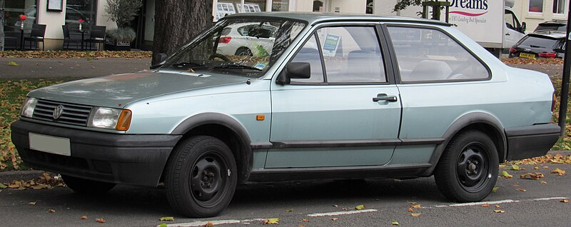

Volkswagen Polo II
Etusivu
Yhteystiedot
Volkswagen Polo I
Volkswagen Polo II
Volkswagen Polo III

Toisen sukupolven Polo tuli markkinoille vuonna 1981 ja tarjosi aiempaa kulmikkaamman muotoilun sekä paremmat tilat matkustajille ja tavaroille. Tämä malli oli suunniteltu kestämään aikaa ja käyttöä, ja sen muotoilussa painotettiin käytännöllisyyttä. Mallisto laajeni Polo Classic (sedan) ja Polo Coupé -versioilla, jotka tarjosivat vaihtoehtoja erilaisiin käyttötarpeisiin. Vuonna 1990 Polo sai kasvojenkohotuksen, jossa keula uudistettiin ja teknisiä ominaisuuksia parannettiin. Tämä sukupolvi oli erittäin suosittu Euroopassa ja osoitti Volkswagenin panostuksen pieniin autoihin

Autot on parhaita! Autot on parhaita! Autot on parhaita! Autot on parhaita! Autot on parhaita! Autot on parhaita! Autot on parhaita! Autot on parhaita! Autot on parhaita! Autot on parhaita! Autot on parhaita! Autot on parhaita! Autot on parhaita! Autot on parhaita! Autot on parhaita! Autot on parhaita! Autot on parhaita! Autot on parhaita! Autot on parhaita! Autot on parhaita! Autot on parhaita! Autot on parhaita! Autot on parhaita! Autot on parhaita! Autot on parhaita! Autot on parhaita! Autot on parhaita! Autot on parhaita! Autot on parhaita! Autot on parhaita! Autot on parhaita! Autot on parhaita! Autot on parhaita! Autot on parhaita!